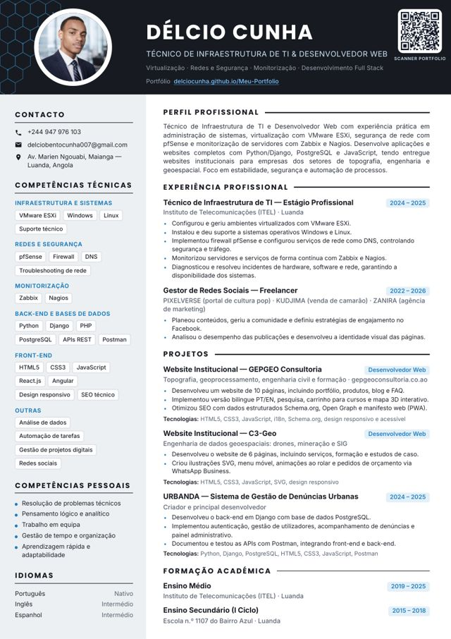

Serviços que não caem
Ambientes virtualizados com VMware ESXi e suporte a Windows e Linux para que cada serviço tenha onde correr e possa ser recuperado.
Sobre mim
Trabalho nas duas pontas do mesmo sistema: a infraestrutura que mantém os serviços de pé e as aplicações que as pessoas usam todos os dias.
Sou Técnico de Infraestrutura de TI e Desenvolvedor Web. Configuro servidores virtualizados com VMware ESXi, protejo redes com pfSense e monitorizo serviços com Zabbix e Nagios. Depois construo as aplicações que correm por cima: back-ends em Django e PostgreSQL e websites completos em JavaScript. Procuro sempre o mesmo resultado: sistemas estáveis, seguros e automatizados.

$ cat /etc/delcio.conf nome = Délcio Cunha base = Luanda, Angola função = Infraestrutura de TI + Desenvolvimento Web formação = ITEL, Instituto de Telecomunicações idiomas = pt (nativo) · en · es (intermédio) foco = [estabilidade, segurança, automação] contacto = delciobentocunha007@gmail.com linkedin = in/delcio-cunha github = github.com/DelcioCunha $
publicadas em três websites: GEPGEO, C3-Geo e Kudjima (10 + 6 + 4)
plataforma full stack criada de raiz: URBANDA
de infraestrutura usadas no estágio: ESXi, pfSense, Zabbix, Nagios
Português nativo, Inglês e Espanhol intermédios
Currículo e certificações

Curso do IIº Ciclo do Ensino Secundário Técnico · Instituto de Telecomunicações (ITEL), Luanda
Backlog estruturado com LLMs, estimativas de complexidade, MCP, Claude Code, GitHub, subagentes para revisão de código e boas práticas de versionamento e QA.
Respostas, storytelling e vocabulário técnico em inglês.
Fundamentos de marketing de afiliados com anúncios pagos.
Estrutura do roteiro, teaser, conteúdo claro com SEO e chamadas para a ação (CTA).
Princípios
Ambientes virtualizados com VMware ESXi e suporte a Windows e Linux para que cada serviço tenha onde correr e possa ser recuperado.
Firewall pfSense e serviços de rede como DNS configurados para controlar o que entra, o que sai e quem tem acesso.
Monitorização contínua com Zabbix e Nagios e automação de tarefas para detetar problemas antes de chegarem ao utilizador.
Percurso
Formação, trabalho e projetos no mesmo eixo de tempo. Passe o rato ou toque numa barra para ver os detalhes.
Cada barra corresponde a um período real do currículo.
Idiomas
Competências pessoais